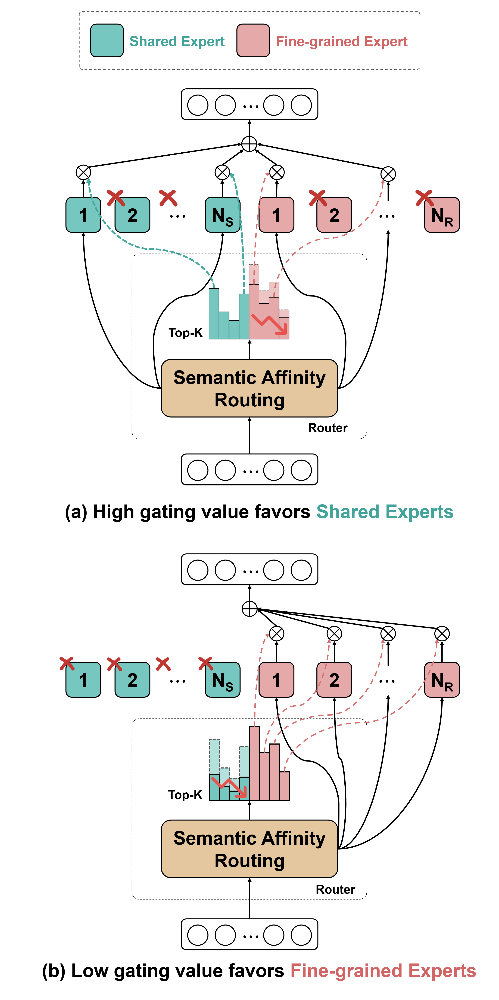
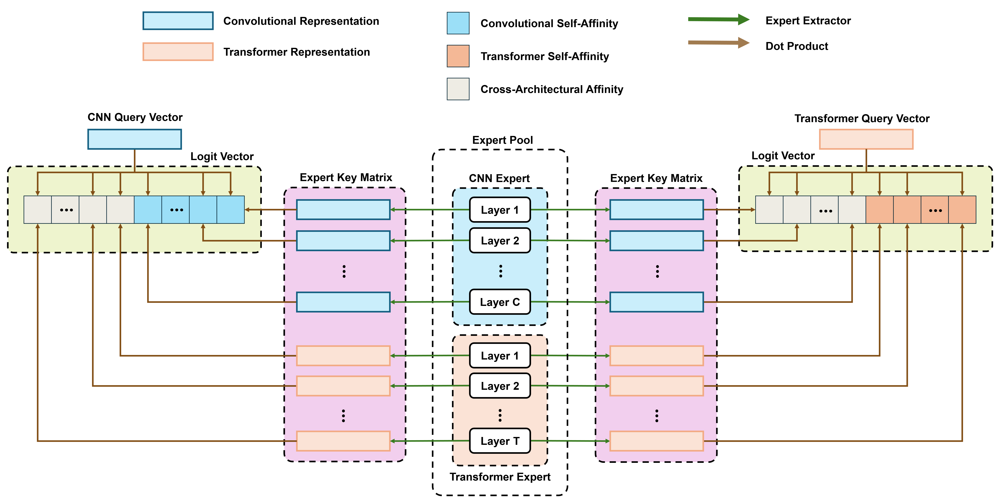
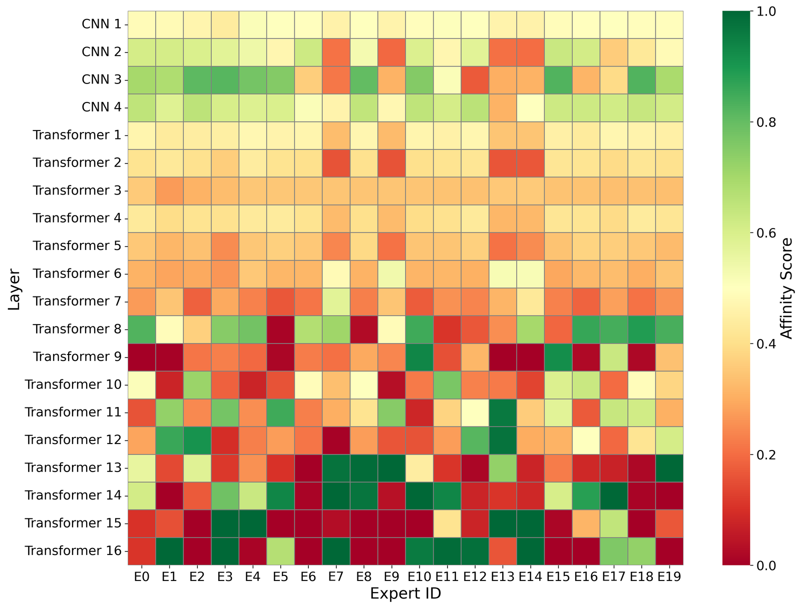

Methodology
The main path (black arrows) keeps the original forward flow through Backbone 1 and Backbone 2, with multi-scale skip connections to the decoder. In parallel, the expert path (brown arrows) routes features from an intermediate layer to a sparse expert set selected by the router. The Shape-Adapting Hub performs bidirectional format alignment so that cross-backbone expert execution is shape-compatible before fusion with the main branch.

Figure 2: SAGE Framework Overview
Hierarchical Top-K Expert Routing
The router dynamically divides computing between shared experts, which capture domain-invariant and transferable features, and specialized experts, who focus on input-specific reasoning. High gating values prefer shared experts for generalization, whereas low values prefer specialized experts for context-dependent adaptation. This hierarchical routing allows SAGE to balance generalization and specialization across several visual domains.

Figure 3: SAGE Gating Mechanism
Semantic Affinity Routing (SAR)
The query vectors of CNN and Transformer calculate routing logits separately by conducting dot-product similarity calculation with expert-specific key matrices. The affinity structure captures relevance within and among modalities, allowing the router to select the semantically most similar experts.

Figure 4: Semantic Affinity Routing (SAR) Mechanism

Figure 5: Normalized Affinity Heatmap — Color scale from red (low) to dark green (high) showing gating probabilities per expert per layer.

Figure 6: Top-K Activation Map — Binary heatmap showing routing choices across layers and experts for K=4.
Shape-Adapting Hub (SA-Hub)
Integrating diverse networks like CNNs and Transformers is challenging because they process data differently. The Shape-Adapting Hub (SA-Hub) acts as a bridge with an Input Adapter to reshape features for the specific expert and an Output Adapter to convert them back. This ensures seamless communication and structural compatibility between heterogeneous modules.

Figure 7: Shape-Adapting Hub (SA-Hub) Structure